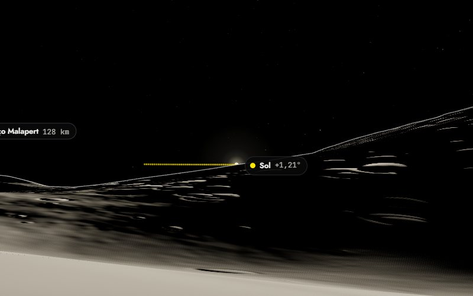
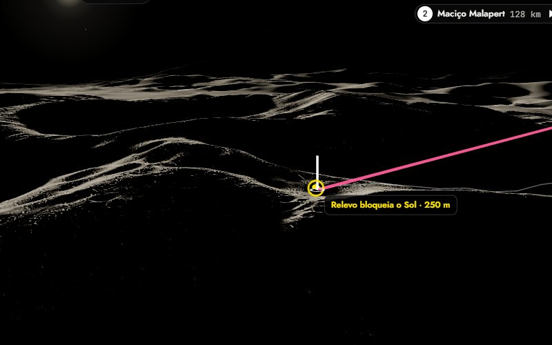
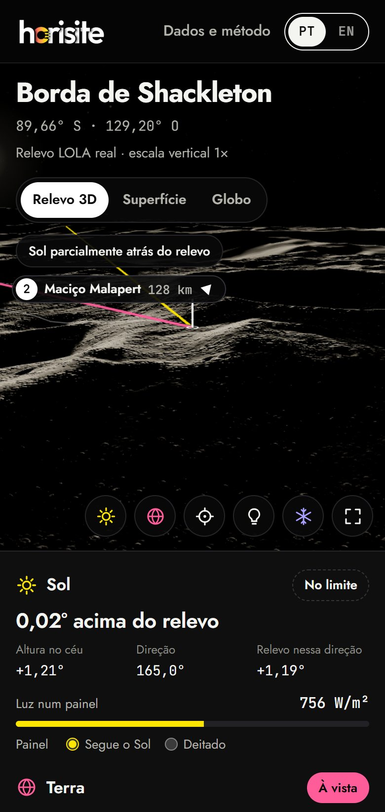

Vai ter energia?
A altura do Sol sobre o relevo de verdade e a luz que chega num painel, em W/m².
O Horisite é um explorador gratuito do polo sul da Lua. Escolha um lugar e uma data e veja, no relevo real, se há luz do Sol para gerar energia e a Terra no céu para falar com casa.
Ali o Sol passa rente ao horizonte e a Terra quase não sai do lugar no céu. Uma crista a 20 km pode apagar um painel solar ou cortar a visada para casa; meio quilômetro para o lado pode devolver as duas.
A altura do Sol sobre o relevo de verdade e a luz que chega num painel, em W/m².
Se o centro da Terra está acima do horizonte do local, e com quantos graus de folga.
O maior trecho contínuo com Sol e Terra juntos nos próximos 30 dias.
Escolha até três locais, mude o momento e leia a resposta na própria cena 3D: raios até o Sol e a Terra mostram onde o relevo bloqueia.


Escala vertical 1× · curvatura lunar · sombras do Sol
maior janela comum entre Shackleton e Malapert a partir de 2 de outubro de 2026, em amostras de 1 hora.
Silhueta real em volta da borda de Shackleton e o caminho do Sol nas próximas 24 horas, calculados agora.

Na lente do app, com a fase real do instante e as luzes das cidades no lado da noite.


Marque até três das cinco regiões de referência do polo sul.
Data e hora UTC, com a barra de 24 horas e a passagem do tempo.
Raios, caminho do Sol e da Terra e a folga sobre o relevo, na cena.
O maior trecho com Sol e Terra juntos, e a missão até ele.
Abra o relevo, mude a data e veja a sombra andar. O tutorial traz exemplos que dá para reproduzir.
As cinco regiões ficam na área do polo sul que a NASA estuda para os pousos da Artemis.
Compare luz e visada em minutos, antes de partir para análises de missão mais finas.
Roda no navegador do computador e do celular, sem cadastro e sem instalar nada.
Abrir no navegador